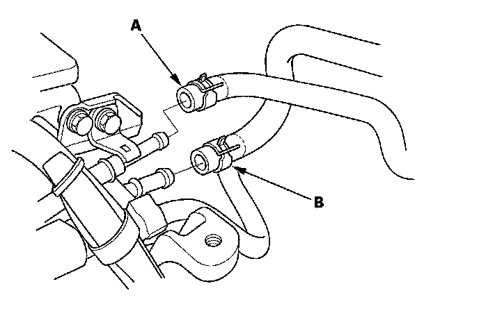
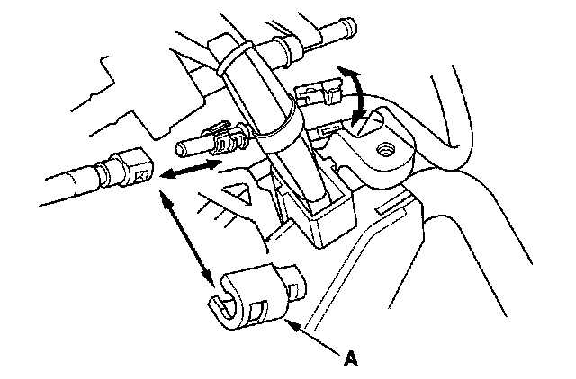
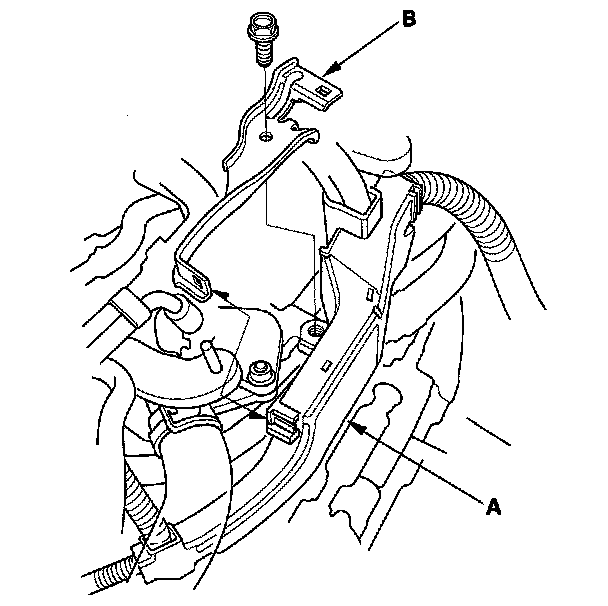
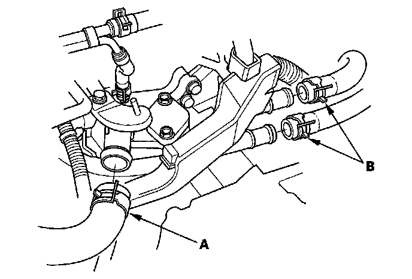
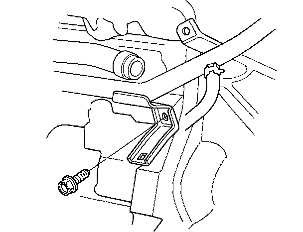
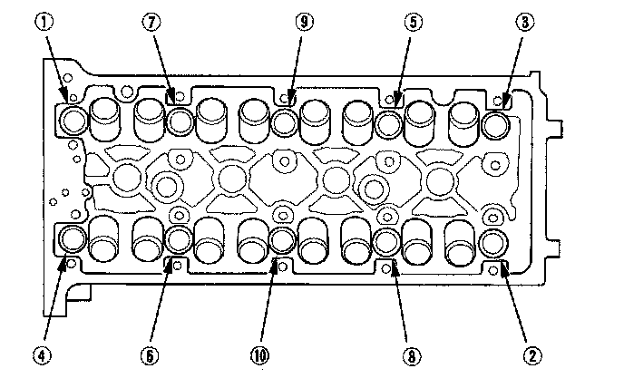

Cylinder Head Removal
Cylinder Head RemovalNOTE:
^ Use fender covers to avoid damaging painted surfaces.
^ To avoid damaging the wiring and terminals, unplug the wiring connectors carefully while holding the connector portion.
^ To avoid damaging the cylinder head, wait until the engine coolant temperature drops below 100° F (38° C) before loosening the cylinder head bolts.
^ Mark all wiring and hoses to avoid misconnection. Also, be sure that they do not contact other wiring or hoses, or interfere with other parts.
1. Relieve fuel pressure.
2. Drain the engine coolant.
3. Remove the air cleaner assembly.
4. Remove the drive belt.
5. Remove the intake manifold.
6. Remove the exhaust manifold.
7. Remove the evaporative emission (EVAP) canister hose (A) and brake booster vacuum hose (B).

8. Remove the quick-connect fitting cover (A), then disconnect the fuel feed hose.

9. Remove the harness holder (A) from the bracket, then remove the harness holder bracket (B).

10. Remove the upper radiator hose (A) and heater hoses (B).

11. Remove the bolt securing the connecting pipe.

12. Remove the engine wire harness connectors and wire harness clamps from the cylinder head.
^ Four fuel injector connectors
^ Engine coolant temperature (ECT) sensor 1 connector
^ Camshaft position (CMP) sensor A (Intake) connector
^ Camshaft position (CMP) sensor B (Exhaust) connector
^ Rocker arm oil control solenoid connector
^ Rocker arm oil pressure switch connector
^ EVAP canister purge valve connector
13. Remove the cam chain.
14. Remove the rocker arm assembly.
15. Remove the cylinder head bolts. To prevent warpage, unscrew the bolts in sequence 1/3 turn at a time; repeat the sequence until all bolts are loosened.

16. Remove the cylinder head.